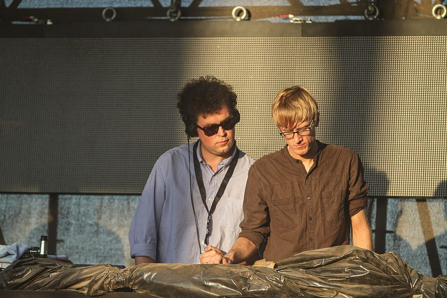

Simian Mobile Disco hotly tipped for Big Day Out



They told us earlier this year they’d be back for the Australian summer, packing a whole album’s worth of new tunes, and we believed them. With all the major summer announcements already out of the way, and with no mention yet of Simian Mobile Disco, strong rumours are building that the UK duo will be showing up on the upcoming second-round announcement for the Big Day Out.
The festival’s organisers are notoriously tight-lipped in the leadup to lineup announcements, but a return appearance from the Simian would make plenty of sense in terms of rounding out the list of artists in the Boiler Room. They dazzled tens of thousands earlier this year with their epic live show, which sees the pair engaging just as much with their impressive setup of analogue machinery as they do the crowd, and they’d be joining Sasha who was also revealed last week to be joining the Big Day Out lineup.
Simian producer James Ford spoke to ITM back in August when promoting their new Temporary Pleasure LP, were he revealed they were keen to return to Australia as soon as possible after the warm reception they received in the Boiler Room this year. “I think we’re probably going to be there for your summer, and we’ll do a festival,” Ford told ITM. “It’s early days at this stage, to the point where I don’t even know if I should be talking about it, but it’s on the cards,” he laughed at the time.
Stay tuned for news on the official second-round Big Day Out lineup shortly, and check out ITM’s Festival Page for more info on the tour.